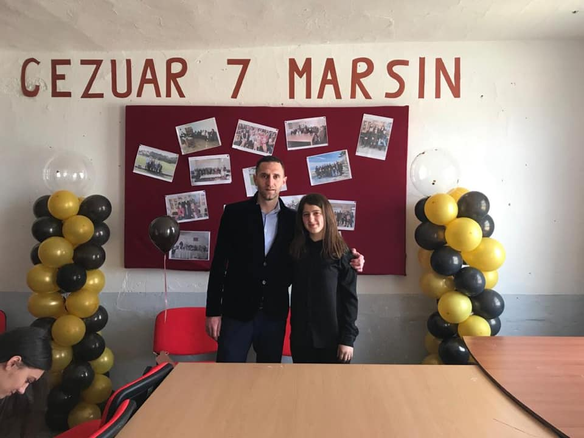
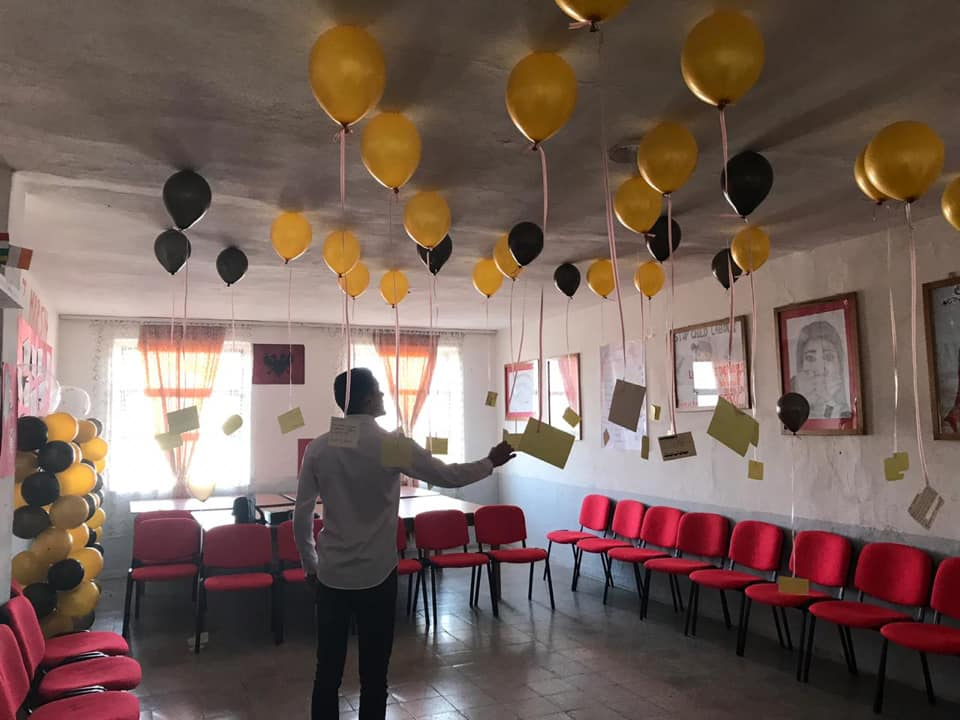

Arif Halil Sulaj

Synimi
Kjo faqe synon te promovojë bashkëpunimin e nxënësve , mësuesve dhe komunitetit ne kuadrin e projektit Shkolla Qëndër Komunitare.Misioni
Misioni i shkollës është edukimi i tek nxënësit i vlerave qytetare e demokratike, me ndjenjën e lartë të përgjegjesisë individuale e kolektive, me vlerësimin e tolerancës e bashkëpunimit në shkollë e shoqëri.

Festimet e 7-marsit
Te nderuar e te respektuar,mesuesit tone,kudo qe jetoni e punoni,gezuar 7 Marsin diten tuaj.Ne kete dite ne ju nderojme ju per punen e kontributin tuaj te madh qe keni dhene,jepni e do te jepni per mesimin e gjuhes sone te paster shqipe te asaj gjuhe qe na e lane amanet te paret dhe detyra jone eshte ta percjellim ashtu te paster tek brezat e ardhshem.Ne jemi krenar me ju dhe ne me gjithe zemer ju urojme Gezuar festen tuaj.

Pergatitje per aktivitet
Ne e ruajme me nostalgji mesimet e keshillat qe na keni dhene mesuesit tone te shtrejte.Ndaj ne kete dite nje telefonate nje lule este ajo qe ju gezon dhe ju ben te lumtur ju,kujtimet per ju do ti ruajme te gjithe jeten tone. Sot, 7 Marsi, Dita e Mësuesit, shënohet si një ngjarje me rëndësi kulturore në gjitha trojet tona shqipetare.7 Marsin,duke ju uruar shendet e jete te gjate ne te mire te kombit e te atdheut tone te shtrejte.